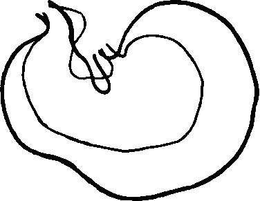

VI. Discussion Of Results
Description
This section is from the book "The Control Of Hunger In Health And Disease", by Anton Julius Carlson. Also available from Amazon: The Control of Hunger in Health and Disease.
VI. Discussion Of Results
So far as we are aware, this is the first time that actual records have been taken of the gastric hunger contractions in man during prolonged starvation; and also the first time that the physiologists themselves have done the starving. But we have many accounts of the subjective feeling of hunger and appetite in man during long fasts. A comparison of these accounts with our own results is rendered difficult by the confusion between the sensations of hunger and of appetite that unfortunately obtains in physiological and medical literature. Leaving out the cases complicated by water starvation, there appears to be a general agreement that the sensations of hunger and appetite increase during the first few (2 or 3) days of starvation, and then decrease even to complete abolition. Succi reverted to drugs to deaden the hunger pangs only during the first two days of his 30-day fast. Viterbi, who starved himself to death voluntarily and kept a daily record of his feelings, noted complete absence of hunger after the fifth day. Cetti and Breihaupt did not experience any discomfort from hunger after the first few days, but it is not clear that hunger and appetite were altogether lacking. The young man starving for 5 days under the observation of Johansson, Landergren, Sonden and Tigerstedt complained of weakness, dizziness, and cold, but did not feel particularly hungry at the end of the fast. Carrington cites many cases of men and women in prolonged starvation where hunger sensation subsided or disappeared after* the third day. All these persons cited by the last author were, however, suffering from this, that, or the other ailment, and some of them were lying in bed during the entire starvation period. These remarks apply also to various popular accounts of cases of prolonged fasting to cure digestive or nervous disorders. All cases of compulsory starvation (persons shipwrecked, explorers and hunters lost, or cut off from supplies, etc.) are usually complicated by lack of water, by the effects of exposure, and by fear, panic, etc., so that the state of the actual hunger sensation cannot be determined.
Fig. 17.-Superimposed life-size tracings of the stomachs of two adult rabbits; the larger represents the stomach of a rabbit killed after eating; the smaller the stomach of a rabbit which died of starvation, but had been permitted to eat its own feces (Rogers).
In the case of the 31-day fast recently reported by Benedict, the subject, a man forty years old, having had previous training in long fasts, insisted that he felt no hunger at any time during the long starvation. Langfeld thinks that this might have been due to strong auto-suggestion, the subject being a vegetarian and a firm believer in fasting as a cure-all. If Benedict's man told the truth, there must have been some abnormality in his hunger mechanism, or else he was able to shunt the visceral hunger impulses out of consciousness by hypnosis. Polimanti states that hunger can be induced by suggestion or hypnosis. We doubt the truth of this statement, at least as regards the real gastric hunger; but if it is true it is probable that hypnosis may also inhibit the hunger.
All these accounts are based on the statements of persons who were in no sense trained observers. In view of that fact, it is probable that the consensus of opinion that hunger disappears after the third day of starvation means no more than that after the third day the hunger sensation is not so persistent or painful as to dominate consciousness.
There was, certainly, some decrease in the hunger and especially in the appetite sensation of the writer, and of Mr. L., on the fourth and fifth days. But it was a decrease, not an absence of hunger sensation. It has already been pointed out that the decrease in intensity of the hunger sensation was not due to a decrease in the intensity of the gastric hunger contractions, but to depression of the central nervous system, or some disturbance in the complex of impulses from proprioceptors. We do not deny the possibility that the sensation of hunger may actually disappear in some persons after two or three days of fasting, but this is not due to starvation as such, but to special conditions, such as primary asthenia of the stomach, great cerebral depression, inhibition via the splanchnic nerves through pain or other factors causing hyperactivity of the sympathetic system, or to copious and continuous secretion of gastric juice causing acid inhibition. In view of our results on experimental animals it seems probable that during periods of prolonged starvation the sensation of hunger will prove most persistent in young and vigorous persons.
Boldyreff states that the periodic contractions of the empty stomach in dogs become feeble and irregular during prolonged fasting and cease entirely after a fast of 3 to 4 days. After that time there is a copious and continuous secretion of gastric juice. If this spontaneous secretion of gastric juice is sufficiently rapid, there will, of course, be an acid inhibition of the hunger contractions.
Only one of our dogs (No. Ill) corroborates the results of Boldyreff. Dog III showed practically no hunger contractions after the third day. The reader will recall that this was the oldest dog in the series, and that he had shown relatively weak and irregular hunger contractions during the control period before starvation. This fact probably indicates an asthenic condition of the stomach, in addition to the certain factor of age.
Boldyreff's dogs had duodenal, biliary, and pancreatic fistulae, in addition to the fistula of the stomach. As these animals were thus subjected to greater disturbance of digestion and metabolism than were the dogs used in our starvation tests, it seems probable that the dogs used by Boldyreff were subnormal in respect to some asthenia of the digestive tract. This may be a factor in the early disappearance of gastric hunger contractions during the prolonged starvation. Multiplication of fistulae also increases the chances for reflex inhibition of the stomach from adhesions, pain, etc. While the difference in BoldyreffJs results and our own may be due mainly to the difference in the condition of the dogs at the beginning of the hunger tests, it may also be noted that Boldyreff's method of registering the gastric contractions was not delicate enough to show the weaker contractions and the variations in tonus. The strong continuous tonus and rapid contractions (type III) which we have designated the "hunger tetanus" would probably not have been recorded on BoldyrefTs tracings. It was precisely this hunger tetanus which was mostly in evidence in our normal starving dogs.
Boldyreff found that during the first three days of starvation there are periods of apparently spontaneous secretion of gastric juice, and that during this secretion the gastric contractions ceased. After the third day the gastric secretion became continuous. We did not subject our dogs to the additional inconvenience of accurate determination of the rate of gastric secretion, but incidental observations in other lines of work on cats with the stomach pouch of Pavlov have convinced us that there may be considerable fluctuation in the rate of the secretion of the empty stomach. The secretion of gastric juice must be relatively rapid, however, in order to maintain complete inhibition of the tonus and contractions of the healthy and vigorous stomach through acid stimulation of local and long reflexes. The stomach of the writer, of Mr. L., and of all the dogs was acid throughout the starvation period, which indicates a more or less continuous secretion of gastric juice, even during the first three days of starvation. But the quantity or strength of hydrochloric acid in the stomach at any one time was not sufficient 'to produce the acid inhibition either in man, dog, or rabbit.
That starvation in man will ultimately lead to marked weakening (and eventually absence) of the sensation,of hunger owing to the depression of the central nervous system and asthenia of the gastric motor mechanism is self-evident, but in young and vigorous animals this depression is absent until the skeletal neuromuscular asthenia is very marked. That prolonged starvation in the case of healthy individuals should completely abolish the sensation of hunger and appetite while the organism is still in fair state of integrity is inherently improbable. When it does occur,, it is probably due to pathological complications. Starvation increases the desire for food (that is, hunger and appetite) in wild animals, at least up to the point where the asthenia reaches a degree that renders locomotion impossible. This is shown by the increased boldness and disregard of danger on the part of the starving animal (herbivorous as well as carnivorous) in his search for food.
Continue to:
- prev: V. Experiments On Rabbits
- Table of Contents
- next: Chapter X. The Nervous Control Of The Hunger Mechanism